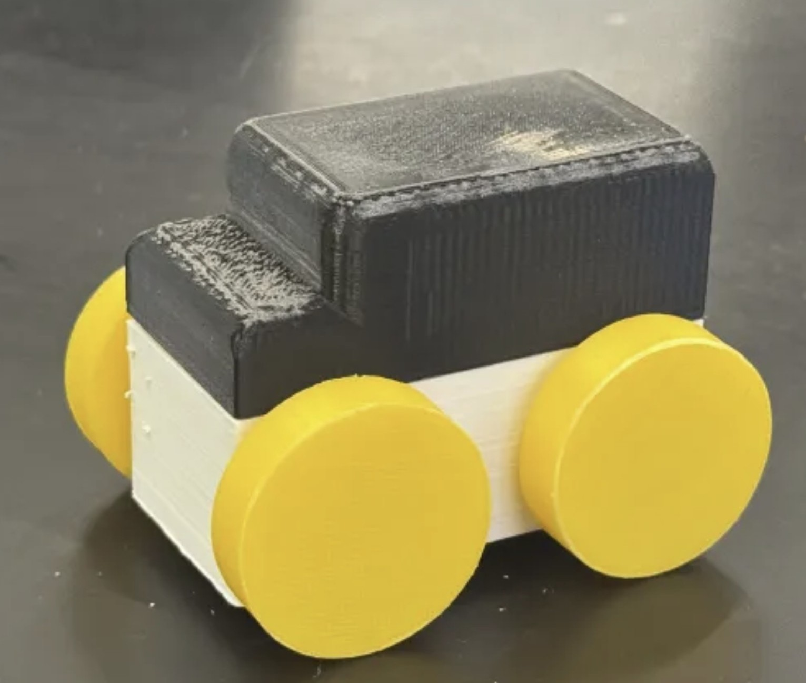

Product Design • Prototyping • Accessibility

This project focused on designing a toy that is accessible and engaging for a wide range of users. The goal was to apply universal design principles to create an inclusive product that is easy to use, safe, and enjoyable for children with different abilities.
A physical prototype was developed to test usability and interaction. The design was iterated based on user feedback to improve comfort, functionality, and accessibility.
This project strengthened my ability to design with inclusivity in mind and reinforced the importance of user-centered design in engineering. It highlighted how small design decisions can significantly impact usability.